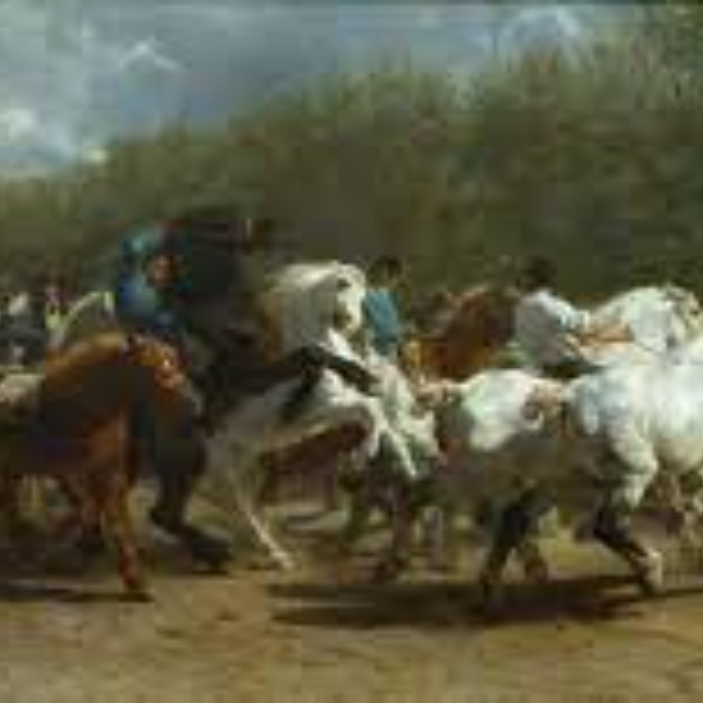
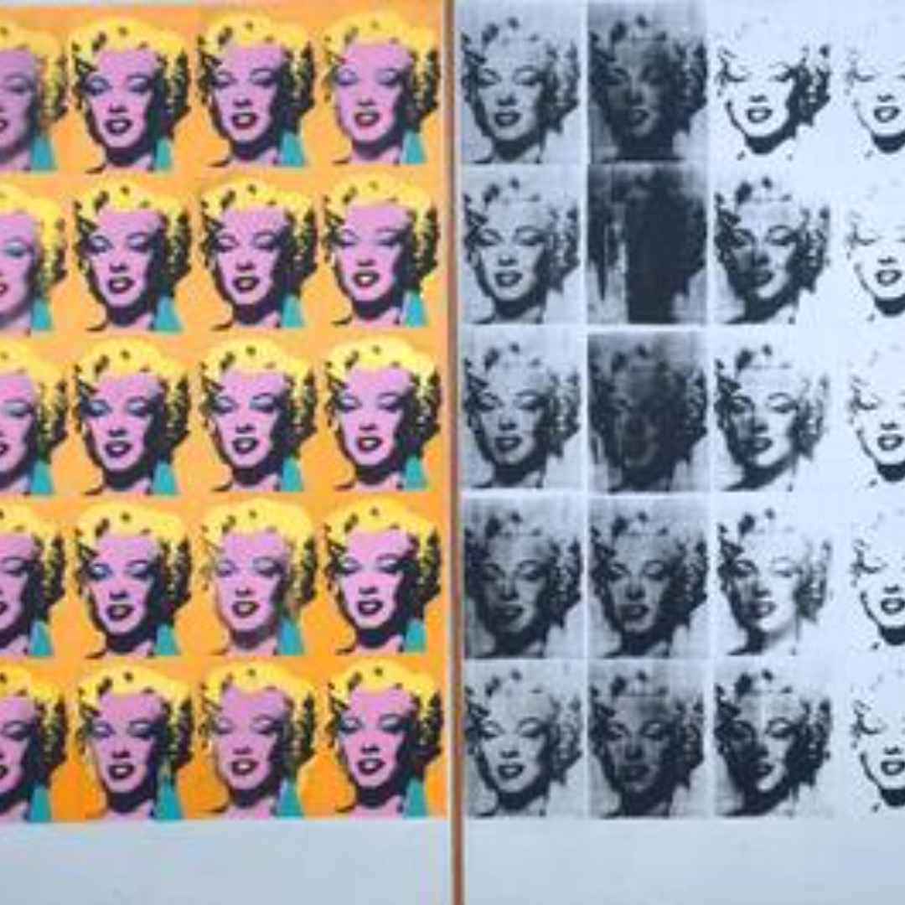
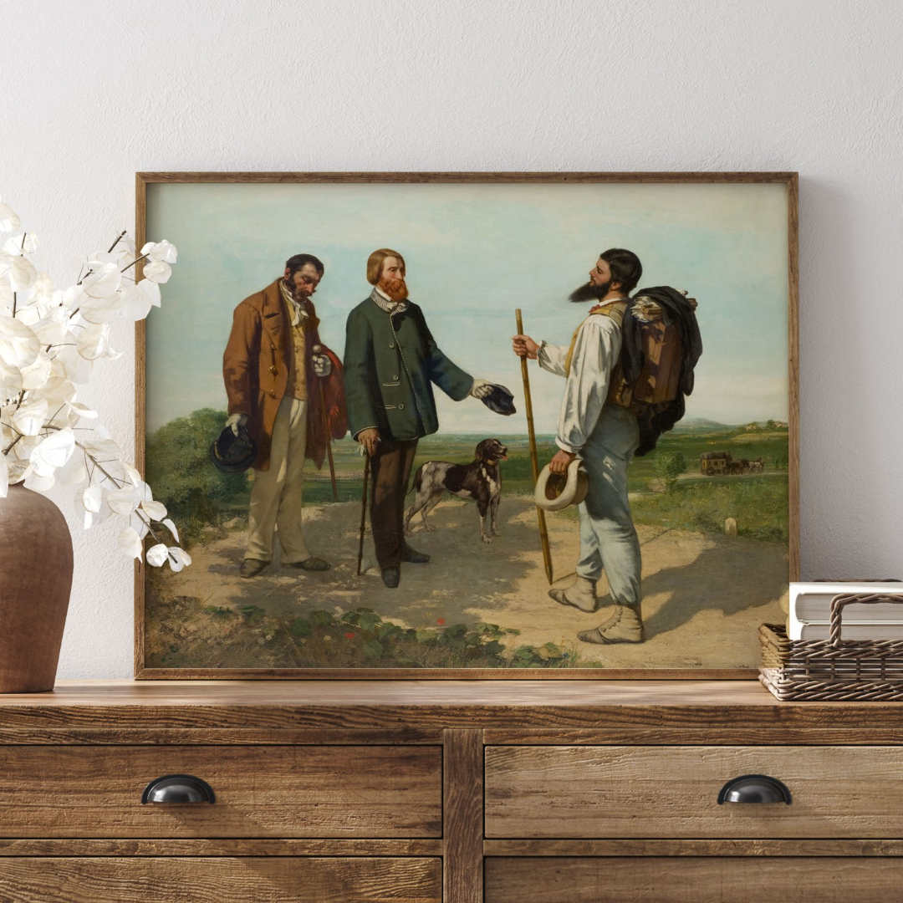
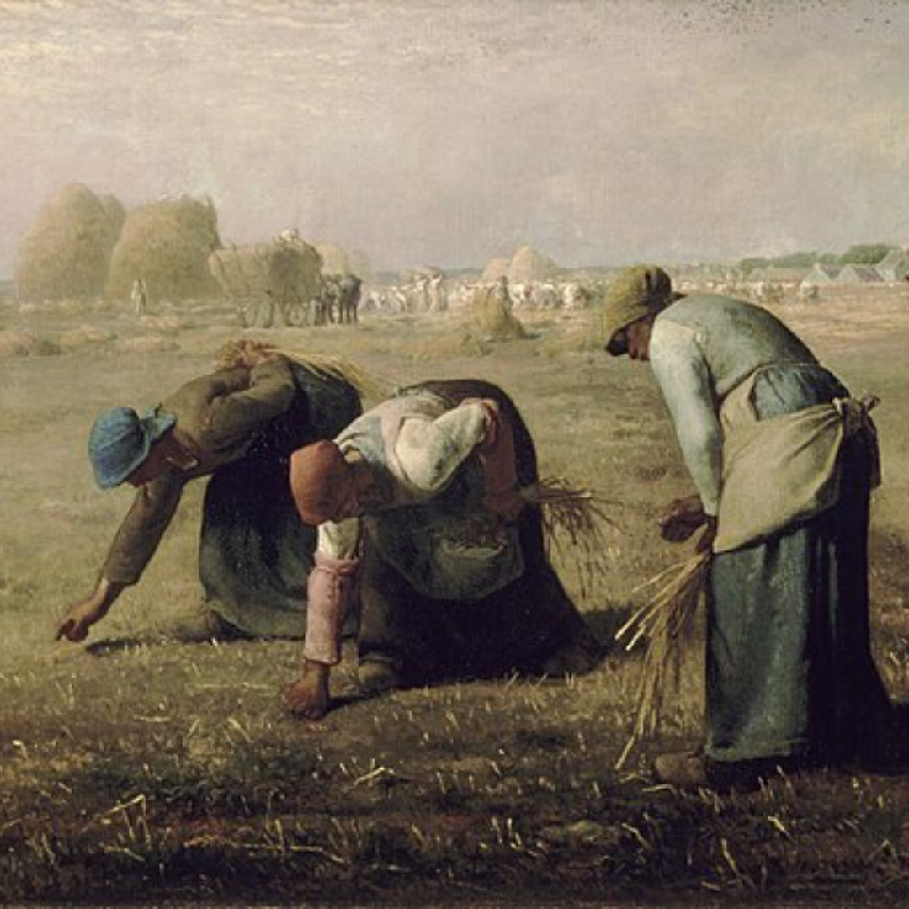

The Horse Fair is an oil-on-canvas painting by French artist Rosa Bonheur, begun in 1852 and first exhibited at the Paris Salon in 1853. The artist added some finishing touches in 1855.

The Railway
The Railway, widely known as Gare Saint-Lazare, is an 1873 painting by Édouard Manet. It is the last painting by Manet of his favourite model, the fellow painter Victorine Meurent.

The Meeting
The Meeting or "Bonjour, Monsieur Courbet" is an oil-on-canvas painting by Gustave Courbet, made in 1854. It depicts the artist on his way to Montpellier meeting his patron Alfred Bruyas, his servant Calas and his dog.

The Gleaners
It depicts three peasant women gleaning a field of stray stalks of wheat after the harvest. The painting is famous for featuring in a sympathetic way what were then the lowest ranks of rural society

Stone Breakers
The Stone Breakers, also known as Stonebreakers, was an 1849 oil-on-canvas painting by the French painter Gustave Courbet. The painting was an example of realism and it portrayed an old man and a young man, both breaking rocks.